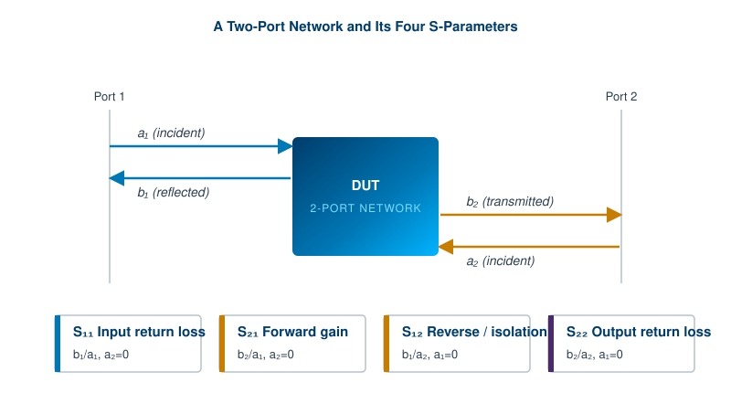
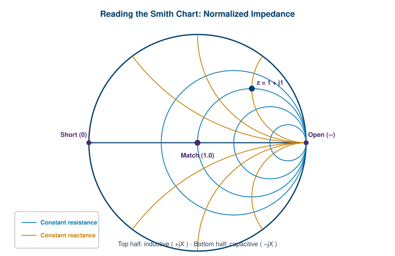

A spectrum analyzer tells you how much power lives at each frequency. It is a scalar instrument, which means it captures amplitude versus frequency and throws away the phase of the signal. For a great many jobs that is enough. But the moment you need to know not just how strong a signal is but how a component changes it, both in magnitude and in timing, scalar measurement runs out of room.
That is the gap the vector network analyzer fills. The VNA measures how a device responds to a known stimulus across frequency, capturing both magnitude and phase. From that pair of numbers it derives the scattering parameters, the Smith chart positions, and the matching information that engineers use to design and verify almost every passive and active RF component. This chapter builds the subject from the ground up: what S-parameters are, how a VNA measures them, why calibration is the whole game, how to read a Smith chart, and how to turn all of it into a working impedance match.
At low frequencies you characterize a circuit with quantities you can measure directly: open-circuit voltages, short-circuit currents, the familiar Z, Y, and H parameters. At RF and microwave frequencies those measurements become impractical. A true open or short is hard to realize when a few millimeters of wire is a meaningful fraction of a wavelength, and the active devices you are testing may oscillate or burn out when you present them with an open or a short.
Scattering parameters solve the problem by changing what you measure. Instead of voltages and currents, S-parameters describe a device in terms of traveling waves: the wave that goes into a port and the wave that comes back out. Every port has an incident wave, written as a, and a reflected or emerging wave, written as b. The terminations are not opens or shorts but the system reference impedance, almost always 50 ohms. That makes the measurement well-behaved, repeatable, and safe for the device under test.
For a two-port network, four S-parameters describe the complete linear behavior. Each one is a ratio of an emerging wave to an incident wave, measured with the opposite port terminated in the reference impedance so that its incident wave is zero:

S-parameters are complex numbers. Each one has a magnitude and a phase, and both carry meaning. The magnitude of S21 is the gain or loss. The phase of S21 tells you the delay the signal experiences, which is what lets a VNA report group delay, a critical parameter for any system that carries modulated data. The phase of S11 tells you where on the Smith chart a reflection sits, which is exactly the information you need to design a matching network. Dropping the phase, as a scalar analyzer does, throws away half the picture.
Two everyday conversions make S-parameters easier to read. Return loss in dB is -20 log10|S11|, where a larger number means a better match. Voltage standing wave ratio, or VSWR, is another way to express the same reflection: VSWR = (1 + |S11|) / (1 - |S11|), where 1:1 is a perfect match and larger ratios mean more reflected energy. A return loss of 20 dB corresponds to a VSWR of about 1.22:1, a common pass/fail line for many components.
Networks with more than two ports extend the same idea. An N-port device has an N-by-N S-matrix, so a four-port balun or a directional coupler is described by sixteen S-parameters. The bookkeeping grows, but the definition of each term never changes: emerging wave over incident wave, all other ports matched.
A VNA is, at heart, a swept superheterodyne receiver with two important additions: it supplies its own stimulus, and it measures phase. The first edition of this book described the VNA as a swept superheterodyne design with an extra stage in the signal path that collects and stores phase information. That is still the right mental model. It is worth unpacking how the pieces fit together.
The instrument contains a source, a stable synthesized signal generator that sweeps across the frequency range of the measurement. The source output is split. Part of it goes to the device under test as the stimulus. Part of it is tapped off as a reference so the instrument always knows the exact phase and amplitude of what it sent. Comparing the reference against what comes back is what makes the measurement vectorial rather than scalar.
Between the source and the test ports sit directional couplers or bridges. A directional coupler can separate the wave traveling toward the device from the wave reflected back from it, even though both share the same cable. This separation is the physical basis for measuring reflection. A coupler that cannot tell forward from reverse cleanly, described by its directivity, sets a hard floor on how good a return loss the instrument can measure.
The separated signals are routed to a bank of receivers, one for the reference and one for each measured wave. Each receiver downconverts its RF input to a fixed intermediate frequency using a local oscillator that tracks the source, then digitizes the IF. Because all receivers share a common reference and a common LO, the instrument can compare their phases coherently. The ratio of the test receiver to the reference receiver, magnitude and phase, is the raw S-parameter.
A full two-port VNA includes a transfer switch that routes the source to port 1 or port 2 in turn. This lets a single sweep measure all four S-parameters without the operator turning the device around. Lower-cost analyzers may measure only S11 and S21, which is fine for many antenna and filter tasks but cannot fully characterize a non-reciprocal device.
Two architectural choices show up across the market. Traditional bench VNAs put full hardware controls and a large display on the front panel. A newer generation of compact, USB-driven analyzers moves the controls into a software GUI on a connected computer, trading front-panel buttons for portability and lower cost. Both share the same measurement principle. Berkeley Nucleonics offers RF and microwave instruments in this space; refer to the current datasheet for specific frequency ranges, port counts, and dynamic range rather than assuming a value here. (Verify against current datasheet.)
Going Deeper - Why dynamic range and IF bandwidth matter
A VNA's ability to measure a deep null, such as the stopband of a high-rejection filter, is limited by its dynamic range: the gap between the largest signal it can drive and the noise floor of its receivers. Narrowing the IF bandwidth lowers the noise floor and extends dynamic range, at the cost of a slower sweep. Averaging does the same. This is the classic RF trade between speed and sensitivity, and it is why a filter measurement that needs 100 dB of rejection takes longer than a quick cable check.
A raw VNA measurement is not trustworthy on its own. Between the receivers and the device under test sit cables, connectors, couplers, and the test fixture, and every one of them adds loss, reflection, and phase shift. Calibration is the process of measuring those imperfections with known standards and then mathematically removing them, so that the corrected result describes the device alone, at a defined reference plane.
The reference plane is the key idea. It is the exact electrical location where you want your measurement to be valid, usually the connector where the device attaches. Calibration moves the measurement plane out from inside the instrument to that point. Everything between the receivers and the reference plane is characterized as a set of systematic error terms and subtracted out. For a full two-port calibration there are twelve such error terms, covering directivity, source match, load match, reflection and transmission tracking, and isolation in both directions.
SOLT is the most widely used calibration for coaxial work. The name lists its four standards: Short, Open, Load, and Thru. You connect a known short, a known open, and a known precision load (a 50-ohm termination) to each port in turn, then connect the two ports together with a known thru. Because the instrument knows the true behavior of each standard from a stored definition, it can solve for the error terms. SOLT is fast, robust, and accurate as long as the standards are good. Its weakness is exactly that dependence: at high frequencies the open and short stop behaving ideally, and the published model of the standard, not the instrument, becomes the limit on accuracy.
TRL, for Thru, Reflect, Line, takes a different approach that shines at microwave and millimeter-wave frequencies and in non-coaxial media such as waveguide, microstrip, and on-wafer probing. Instead of requiring perfectly characterized opens and loads, TRL relies on a thru connection, a reflect standard (any high-reflection element, and you do not need to know its exact value precisely), and one or more transmission lines of known length. The lines provide the reference, and their accuracy comes from physical dimensions you can measure, not from a frequency-dependent model. The trade is bandwidth: a single line covers roughly an 8:1 frequency span before its electrical length approaches a problematic half wavelength, so wide coverage needs multiple line standards.
A practical way to choose: use SOLT when you are working in coax with a good calibration kit across moderate bandwidths, which covers most bench work. Reach for TRL (or its relatives such as LRM, line-reflect-match) when you are measuring in a fixture, on a wafer, or in waveguide, where you cannot buy a precise open or load but you can fabricate accurate lines. Electronic calibration modules, often called ECal, automate the whole sequence by switching internal standards under instrument control, which removes connector wear and operator error at the cost of buying the module.
Calibration is not a set-and-forget step. It is valid only for the frequency range, power level, IF bandwidth, and physical setup in which it was performed. Change the cables, swap an adapter, or let the temperature drift, and the calibration degrades. The discipline of recalibrating when conditions change is the difference between a measurement you can defend and a number that merely looks plausible.
The Smith chart looks intimidating and turns out to be one of the most useful tools in RF. It is a graphical way to display complex reflection coefficients and the impedances they correspond to, all on a single circular plot. Phillip Smith devised it in the 1930s so engineers could solve transmission-line and matching problems without grinding through complex arithmetic. A VNA can plot S11 directly on it, which is why it remains everywhere on modern instrument displays.
The chart is the complex reflection-coefficient plane folded onto the unit circle. The center of the chart is a perfect match, where the reflection coefficient is zero and the normalized impedance is exactly 1.0 (that is, the load equals the reference impedance, typically 50 ohms). The outer rim is total reflection, where the magnitude of the reflection coefficient is 1. The far left point is a short circuit (zero impedance) and the far right point is an open circuit (infinite impedance). Distance from the center tells you how bad the match is; angle tells you the phase of the reflection.

The grid is built from two families of curves. The constant-resistance circles (the blue circles in Figure 6.2) all pass through the open-circuit point on the right. Each one marks a fixed normalized resistance: the big circle through the center is r = 1, smaller circles toward the right are higher resistances. The constant-reactance arcs (the amber curves) sweep up and down from that same open point. Arcs in the upper half are positive reactance, meaning inductive loads; arcs in the lower half are negative reactance, meaning capacitive loads. The real axis straight across the middle is pure resistance with no reactance.
To read a point, find which resistance circle and which reactance arc it sits on, and read off the normalized impedance. A point at the intersection of the r = 1 circle and the +1 reactance arc is a normalized impedance of 1 + j1, which on a 50-ohm system is 50 + j50 ohms. Multiply normalized values by the reference impedance to get the real thing. The chart also has an admittance overlay (the same chart rotated 180 degrees) that makes parallel components easy to handle, which is the form many matching problems take.
Why does any of this help? Because impedance transformations that are tedious in algebra become simple moves on the chart. Adding a series inductor moves you clockwise along a constant-resistance circle. Adding a series capacitor moves you counterclockwise along it. Adding a shunt element moves you along a constant-conductance circle on the admittance grid. Traveling down a transmission line rotates you around a circle centered on the chart center. Designing a match becomes a matter of plotting where you start, marking where you want to end (the center), and choosing components that walk you from one to the other.
Maximum power transfers from a source to a load when their impedances are conjugate-matched, and reflections vanish when the load equals the system impedance. In real RF systems, almost nothing starts out at a clean 50 ohms across the band of interest. An antenna, a power transistor, a mixer port: each presents some complex impedance that varies with frequency. Impedance matching is the practical work of inserting a network that transforms that impedance toward the reference, so that signal flows efficiently and reflections stay low.
The VNA and the Smith chart turn matching from guesswork into a procedure. The steps look like this in the field:
The components you reach for depend on frequency. Below roughly 1 to 2 GHz, lumped elements (discrete inductors and capacitors) do the job and are compact. As frequency rises, component parasitics dominate and you switch to distributed structures: lengths of transmission line, quarter-wave transformers, and open or shorted stubs etched into the board. At millimeter-wave frequencies the matching network is mostly geometry, tuned by the dimensions of the traces themselves.
Bandwidth is the constant tension. A network that produces a perfect match at one frequency may be poor a few percent away. The Bode-Fano limit sets a theoretical ceiling on how good a match you can hold over how wide a band for a given load, which means broadband matching is always a compromise between depth of match and width of coverage. This is why a filter designer and an antenna designer, facing the same load, may build very different networks: one prioritizes a deep notch at a point, the other a tolerable match across a span.
BNC in Practice - Why a good match is not always the goal
Conjugate matching maximizes power transfer, but it is not always what you want. A low-noise amplifier is often matched for minimum noise figure rather than maximum gain, and the noise-optimum source impedance is generally not the conjugate match. A power amplifier may be matched for efficiency or linearity using load-pull data rather than a simple 50-ohm target. The Smith chart and the VNA support all of these goals; the engineer decides which one the application demands.
The thread running through this chapter is that phase is information. A scalar measurement can tell you a component is lossy. Only a vector measurement can tell you why, where the reflection sits, what network will cancel it, and how the device will behave inside a system that cares about timing. The VNA, its calibration, the Smith chart, and the matching network are four views of the same underlying truth, and together they are the core toolkit for designing and verifying RF hardware.
Take it interactively. The quiz lives on its own page with hidden answers - write your attempt first (even four characters works), then reveal. Self-graded. About 10 minutes.
Or read the questions and answers inline below (preserved for print and offline use).
[1] Pozar, D. M., "Microwave Engineering," 4th ed., Wiley. Standard reference for S-parameters, network analysis, and matching theory. Verify edition and page references before publication.
[2] Keysight Technologies, "Understanding the Fundamental Principles of Vector Network Analysis," application note 1287-1. Verify current revision before publication.
[3] Keysight Technologies, "Network Analyzer Error Models and Calibration Methods" (SOLT and TRL technical material). Verify current revision before publication.
[4] Smith, P. H., "Transmission Line Calculator," Electronics, 1939; and "Electronic Applications of the Smith Chart," for the origin and use of the Smith chart. Verify citation details before publication.
[5] Fano, R. M., "Theoretical Limitations on the Broadband Matching of Arbitrary Impedances," Journal of the Franklin Institute, 1950, for the Bode-Fano bandwidth limit. Verify citation details before publication.